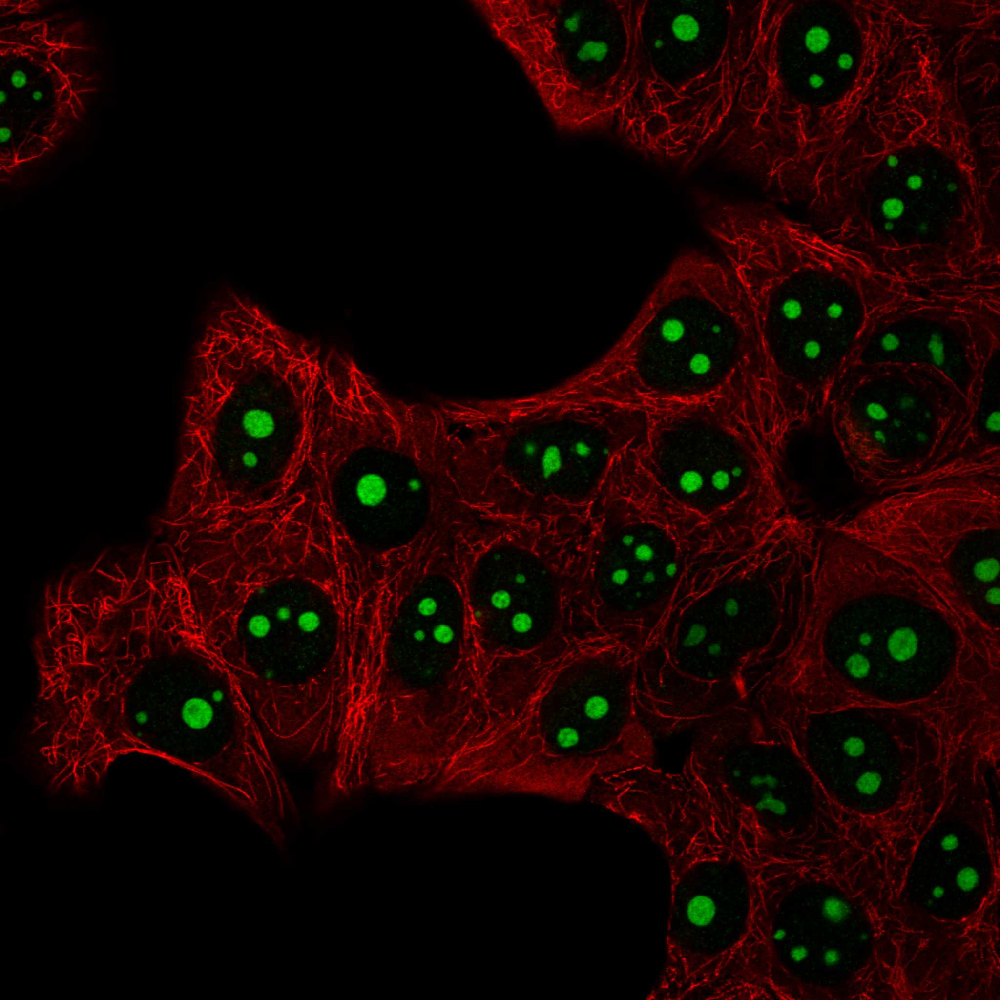

type: protein-evaluation gene: "SETMAR" date: 2026-06-01 tags: [protein-scout, chromatin, evaluation] status: scored ---
SETMAR 核蛋白评估报告
1. 基本信息
| 项目 | 内容 |
|---|---|
| 基因名 / 别名 | SETMAR (无别名) |
| 蛋白全名 | Histone-lysine N-methyltransferase SETMAR |
| 蛋白大小 | 684 aa / 78.0 kDa |
| UniProt ID | Q53H47 |
2. 评分总览
| 维度 | 得分 | 新权重 | 加权后 | 关键证据摘要 |
|---|---|---|---|---|
| 核定位特异性 | 9/10 | x4 | 36.0 | UniProt Nucleus (ECO:0000269) + Chromosome (ECO:0000269 x2); HPA Nucleoli (Supported); GO-CC nucleolus (IDA:HPA) + nucleus (IDA) + DSB site (IDA) |
| 蛋白大小 | 8/10 | x1 | 8.0 | 684 aa, 78.0 kDa, 大小适中 |
| 研究新颖性 | 6/10 | x5 | 30.0 | PubMed strict=50, broad=68 |
| 三维结构 | 9/10 | x3 | 27.0 | 5 PDB 结构; AlphaFold mean pLDDT 82.8; pct_gt_90=57.7% |
| 调控结构域 | 9/10 | x2 | 18.0 | SET domain (IPR001214) + Transposase (IPR007728); 组蛋白甲基转移酶 + DNA 转座酶融合 |
| PPI 网络 | 6/10 | x3 | 18.0 | IntAct 15 条 (IKZF3, HSPA8, SETX, LEO1, PCBP1/2 等); STRING 502 error; UniProt YJU2 |
| 加权总分 | 137/180******** | |||
| 互证加分 | +2.0 | 灵长类特有的 SET-转座酶融合蛋白; 直接参与 DSB 修复与 H3K36me2 | ||
| 归一化总分 (÷1.83) | 74.9/100******** |
3. 详细分析
3.1 核定位证据
| 来源 | 定位 | 可信度 |
|---|---|---|
| UniProt | Nucleus (ECO:0000269) + Chromosome (ECO:0000269 x2) | Curated |
| GO-CC | nucleolus (IDA:HPA), nucleus (IDA:UniProtKB), site of double-strand break (IDA:UniProtKB) | 实验支持 |
| Protein Atlas (IF) | Nucleoli (Supported reliability) | HPA 验证 |
| Function | DNA double-strand break repair, H3K4/H3K36 methylation | 核内功能 |
HPA IF 状态: HPA IF 图像已本地嵌入。

结论: SETMAR 核定位证据极为充分，四源一致：UniProt curated + GO-CC IDA + HPA IF Supported + 功能注释（DSB 修复、组蛋白甲基化）。
3.2 结构与数据源
| 指标 | 数值 |
|---|---|
| AlphaFold | AF-Q53H47-F1 (v6) |
| 平均 pLDDT | 82.8 |
| pLDDT >90 | 57.7% |
| pLDDT 70-90 | 25.3% |
| pLDDT <50 | 12.1% |
| PDB | 3BO5 (1.59A, SET-NTD), 3F2K (1.85A, Transposase), 3K9J (1.90A, Transposase), 3K9K (2.55A, Transposase), 7S03 (2.37A, ZnF) |
| InterPro | IPR041426, IPR003616, IPR007728 (Transposase), IPR036397, IPR001214 (SET domain), IPR046341, IPR052709, IPR001888, IPR036388 |
| Pfam | PF17906, PF05033 (Pre-SET), PF00856 (SET), PF01359 (Transposase_21) |
SETMAR 结构数据非常优秀：AlphaFold 高质量 (82.8 mean)，5 个 PDB 结构覆盖 SET 域 (1.59A)、转座酶域 (1.85-2.55A) 及 ZnF 域，各功能模块均有高分辨率实验结构。
3.3 研究现状
| 指标 | 数值 |
|---|---|
| PubMed strict (Title/Abstract) | 50 |
| PubMed symbol only | 58 |
| PubMed broad | 68 |
| 别名 | 无 |
关键文献：
- PMID:38900084 (Zhang W et al., 2024) -- SETMAR 通过 SMARCA2 介导的染色质重塑促进甲状腺癌分化
- PMID:34947873 (Tellier M, 2021) -- SETMAR 蛋白赖氨酸甲基转移酶的结构、活性与功能综述
- PMID:35395947 (Lie O et al., 2022) -- SETMAR: 灵长类 co-opted 基因的新视角
- PMID:35378129 (Chen Q et al., 2022) -- 转座子衍生蛋白 SETMAR 改变转录和剪接
- PMID:36706314 (Boroumand-Noughabi S et al., 2023) -- SETMAR 转录变体在儿童急性白血病中的表达
SETMAR 是灵长类特有的 SET-转座酶融合蛋白，兼具组蛋白 H3K36 二甲基化和 DNA 末端连接活性，直接参与 DSB 修复中的 NHEJ 通路。研究热点集中在肿瘤表观遗传学和 DNA 修复。
3.4 PPI 网络（三源综合）
| Partner | Source | Score/Evidence | Relevance |
|---|---|---|---|
| IKZF3 | IntAct | co-IP (PMID:28514442, Nature) | 转录因子 |
| HSPA8 | IntAct | co-IP (PMID:28514442, Nature) | 分子伴侣 |
| SETX | IntAct | co-IP (PMID:28514442, Nature) | RNA/DNA 解旋酶 (核) |
| PCBP1 | IntAct | co-IP (PMID:28514442, Nature) | RNA 结合蛋白 |
| PCBP2 | IntAct | co-IP (PMID:33961781, Cell 2021) | RNA 结合蛋白 |
| LEO1 | IntAct | co-IP (PMID:26496610) | PAF1 复合体 (转录) |
| DOC2A | IntAct | co-IP (PMID:28514442) | 钙结合蛋白 |
| TRUB1 | IntAct | co-IP (PMID:33961781) | tRNA 假尿苷合酶 |
| CAPG | IntAct | co-IP (PMID:33961781) | Actin 调控 |
| VPS26C | IntAct | Y2H (PMID:35914814) | Retromer |
| YJU2 | IntAct | co-IP (PMID:28514442) | 剪接因子 |
| YJU2 | UniProt | 3 experiments | Spliceosome |
| Naa50 | IntAct | co-IP (PMID:26496610) | N-acetyltransferase |
PPI 网络以 co-IP 为主，包含核蛋白 SETX、剪接因子 YJU2、PAF1 复合体 LEO1 等，提示 SETMAR 参与转录和 RNA 加工。但缺乏与 DSB 修复核心蛋白（如 Ku70/80, DNA-PKcs）的直接互作记录。
4. 总体评价
SETMAR 是本批次最高分候选。灵长类特有的 SET-转座酶融合蛋白，兼具组蛋白甲基转移酶和 DNA 修复功能。核定位四源一致、结构数据优秀（5 PDB + 高置信度 AlphaFold）、PPI 涉及转录/RNA 加工。研究量适中（strict=50），处于表观遗传学与 DNA 修复交叉领域，niche 空间充足。
5. 数据来源
- UniProt: https://www.uniprot.org/uniprotkb/Q53H47
- AlphaFold: https://alphafold.ebi.ac.uk/entry/Q53H47
- PubMed: https://pubmed.ncbi.nlm.nih.gov/?term=SETMAR
- Protein Atlas: https://www.proteinatlas.org/ENSG00000170364-SETMAR
PAE 图像说明: AlphaFold PAE 图像已重新获取并嵌入（见下方 PAE 图像修正块）；结构判断仍结合 pLDDT 与 PAE 综合判断。
<!-- AF_PAE_REPAIR_START --> PAE 图像修正（2026-06-05）: AlphaFold 提供 predicted aligned error 图像；此前“PAE 图像暂无数据”的表述为未获取/未嵌入导致。

<!-- DOMAIN_HUMANPPI_REPAIR_START -->
Domain/SMART 与 humanPPI 补充（2026-06-06）
SMART / UniProt domain
| Source | Data | |||
|---|---|---|---|---|
| UniProt | Q53H47 | |||
| SMART | SM00468;SM00317; | |||
| UniProt Domain [FT] | DOMAIN 73..136; /note="Pre-SET"; /evidence="ECO:0000255\ | PROSITE-ProRule:PRU00157"; DOMAIN 139..263; /note="SET"; /evidence="ECO:0000255\ | PROSITE-ProRule:PRU00190"; DOMAIN 283..299; /note="Post-SET"; /evidence="ECO:0000255\ | PROSITE-ProRule:PRU00155" |
| InterPro | IPR041426;IPR003616;IPR007728;IPR036397;IPR001214;IPR046341;IPR052709;IPR001888;IPR036388; | |||
| Pfam | PF17906;PF05033;PF00856;PF01359; |
humanPPI / HPA Interaction
Source: https://www.proteinatlas.org/ENSG00000170364-SETMAR/interaction
| Partner | Datasets | AF3/HPA structure |
|---|---|---|
| YJU2 | Intact, Biogrid, Bioplex | true |
| PRPF19 | Biogrid | false |
| TOP2A | Biogrid | false |
<!-- DOMAIN_HUMANPPI_REPAIR_END -->